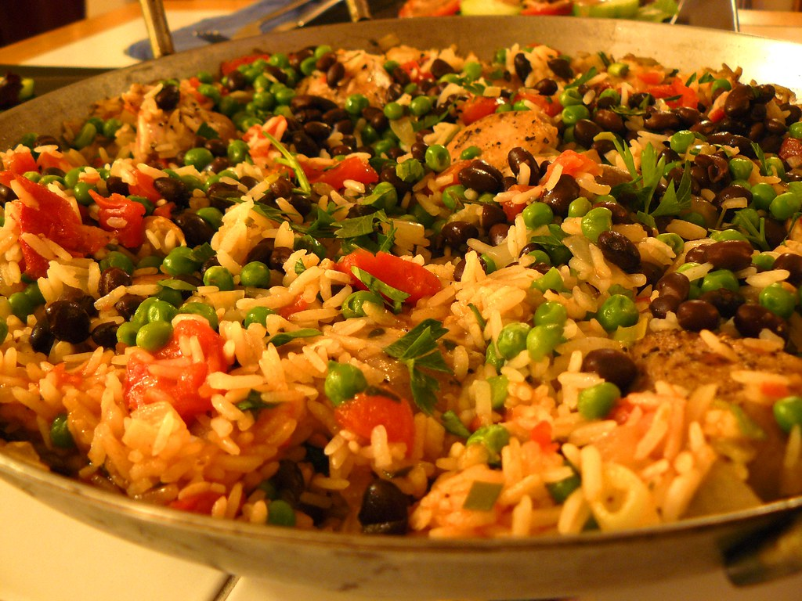

Description
A comforting dish that will fill your belly and warm your soul. Arroz con Pollo is a staple dish in many Hispanic and Latin households though each family has their own variation of the dish.
Cooked together in one pan the flavorful spices and fresh ingredients meld together into a mouthwatering meal.
Outside of providing you and your loved ones with a hearty meal, this dish does not produce many dirty dishes and is relatively simple to make. All that's needed is a short list of fresh and pantry ingredients, many of which you may already have in your home (or on your grocery list!), and about 30-45min of your time!
Ingredients
- 3-4 bone in, skin on chicken thighs
- salt, pepper for seasoning
- 1/4c olive oil (NOT Extra Virgin)
- 1 medium yellow onion, diced
- 1 jalapeño (or green bell pepper if you prefer a more mild experience)
- 4-5 cloves of garlic, minced
- 1 (14.5oz) can of diced tomatoes, do not drain
- 2.5c chicken broth (add about 1/4c water if using stock)
- 1 large bay leaf
- 1/2 packet of Sazón (see Notes section for a DIY version!)
- 2c Valencia or Bomba rice (or any medium to long grain rice)
- 1c each of frozen peas and corn
- A pinch of Saffron threads (optional)
Steps
- Pat dry chicken thighs with paper towels and season generously with salt on all sides.
- Heat oil in a high sided pan or dutch oven (just make sure it has a lid!) on medium-high heat.
- Once oil is hot enough to shimmer (google it!) add the chicken thighs and brown each side until golden brown and crispy. About 3-5min per side.
- Remove chicken from pan and set aside, ideally on a drip tray. Add diced onion and pepper to the still hot pan and saute until the onions are soft and slightly translucent.
- Add minced garlic and saute all together for another 30sec or so (until garlic is just golden).
- Douse the pan with the broth, tomatoes, bay leaf, and spice mix. Give everything a good stir to combine, cover, and bring to a quick boil over high heat.
- Once a rolling boil is achieved, stir in the rice and frozen veg until mixed then nestle the chicken pieces into the pan and return to a boil.
- Reduce heat to low and simmer for 25-45min (final time is dependant on factors such as elevation, kitchen appliances, and prefered doneness).
- Check internal temp of chicken (165F minimum) before serving alongside Tostones.
Notes
Making your own Sazón at home!
If you can't find Sazón where you live, or if you would like a “healthier” alternative without preservatives and artificial colors, you can make a DIY version instead!
- Annatto (Achiote): Ground seeds that give the dish a warm, mild flavor and a distinct red-orange color
- Cumin: Pungent and remarkably distinct earthy flavor
- Coriander seeds: Herbaceous and nutty
- Salt and Pepper: The dynamic duo, never leave the kitched without them!
- Monosodium glutamate (MSG): Provides deep umami flavor, without all those nasty side effects ;) (this is me being cheeky)
- Garlic and Onion Powder: Savory, sweet, just like their hydrated selves.
Want more rice?
Why not try Moros y Christianos?